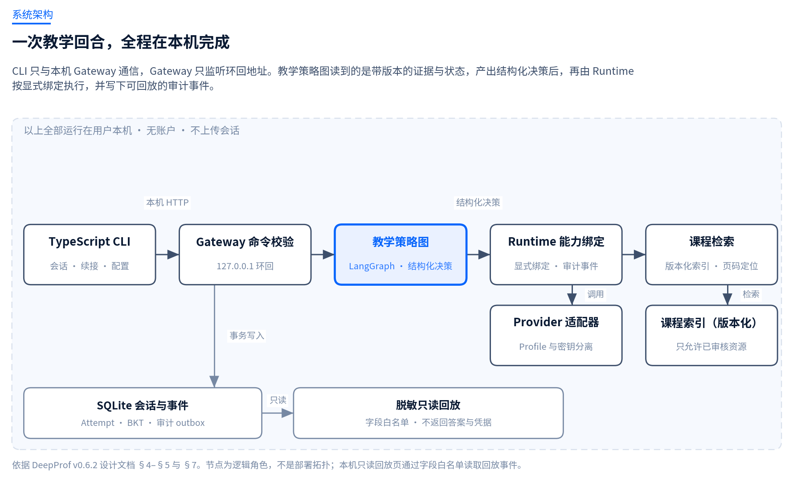
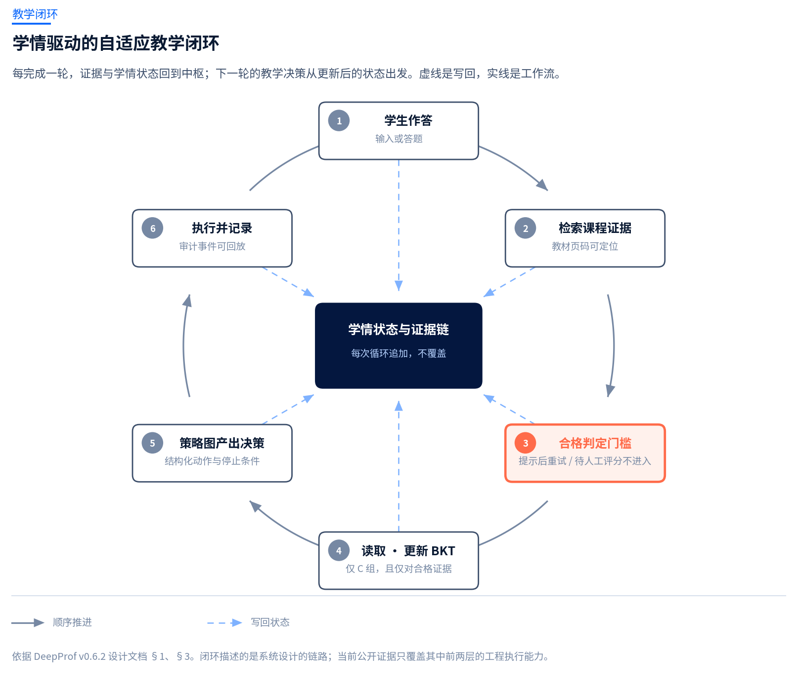
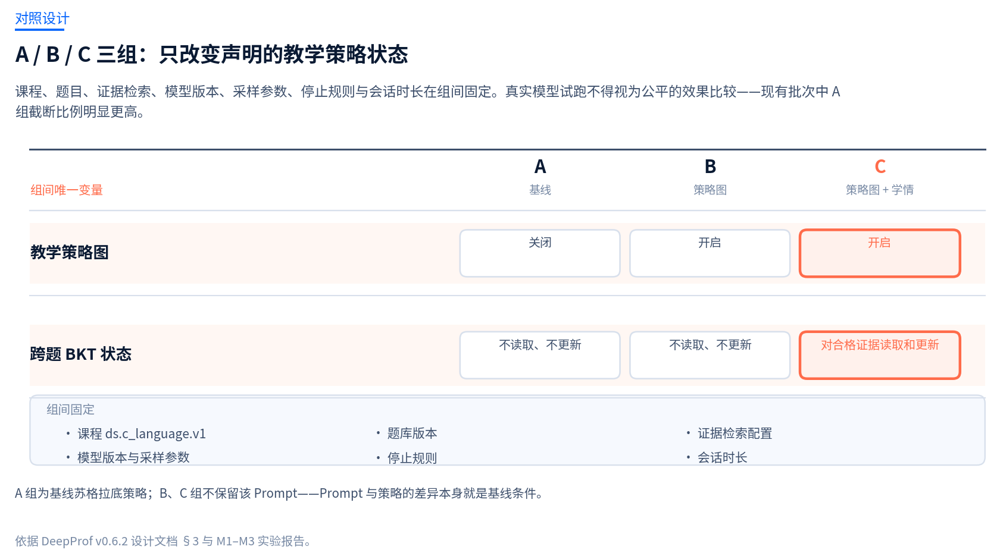

本机优先 · 证据可追溯 · 试点课程：C 语言版数据结构Local-first · Evidence-traceable · Pilot course: Data Structures in C
让每一条教学建议都有出处Every teaching suggestion, traceable to its source
DeepProf 是一套本机优先的自适应教学原型。它把课程材料中的可定位证据、学习者的合格作答事实、明确的教学策略与 BKT 掌握估计，连到同一条可回放的教学链路上——让学习建议有出处、教学决策可审查、失败过程可追溯。DeepProf is a local-first adaptive teaching prototype. It links locatable evidence from course materials, reliable learner-answer facts, an explicit teaching policy and a BKT mastery estimate onto one replayable teaching chain — so that suggestions have sources, decisions are reviewable, and failures stay traceable.
大模型能答疑，但它的回答通常不能拿来教学A model can answer questions; its answers are rarely usable as teaching
把学科问题丢给通用助手，得到的东西在正确性上往往够用，在教学上却常常不成立。我们把这个落差拆成三种反复出现的失败。Hand a subject question to a general assistant and the answer is often correct enough — yet still not usable for teaching. We break that gap into three recurring failures.
01
答案泄露Answer leakage
直接给出结论，跳过了学生本该自己完成的那一步。一次答疑很顺，但学习没有发生。It hands over the conclusion and skips the step the student was meant to take. The exchange feels smooth; the learning does not happen.
02
建议无出处No source
回答听起来合理，却指不到教材的哪一页、哪一条知识点。学生没法回查，教师没法核对。The reply sounds plausible but points at no page or knowledge point. Students cannot check it back; teachers cannot verify it.
03
过程不可复现No reproducible trail
同一道题两次问得到不同的教学动作，事后也回看不出当时为什么这么决定。The same question gets different teaching actions on two attempts, and there is no way to look back at why the system chose what it chose.
DeepProf 的设计目标不是把回答写得更漂亮，而是把上面三件事变成系统里可检查的属性：证据可定位、决策可审计、过程可回放。DeepProf is not designed to write prettier answers. It is designed to turn those three failures into checkable system properties: locatable evidence, auditable decisions, replayable process.
02系统System
决策与记录留在本机，模型调用由你指定Decisions and records stay local; the model call is yours to configure
CLI 只与本机 Gateway 通信，Gateway 只监听环回地址；会话、事件与课程索引都落在用户数据目录。教学策略图读到的是带版本的证据与状态，返回结构化决策，Runtime 再按显式绑定去调用课程检索或模型，并写下审计事件。The CLI talks only to a local Gateway, which listens on loopback only; sessions, events and the course index live in the user data directory. The policy graph receives versioned evidence and state and returns a structured decision, and the Runtime then calls course retrieval or the model through explicit bindings and writes audit events.
本机到哪儿为止Where "local" stops
模型调用本身不在本机：一旦你配置了远端 Provider，教材检索片段与提示会发送给该 Provider。项目里可复现的离线批次改用本地 Fake Provider，不产生网络调用与费用；真实模型试点的这一前提在实验报告里单独记录。The model call itself is not local: once you configure a remote provider, retrieved textbook fragments and prompts are sent to that provider. The reproducible offline batches instead use a local fake provider, with no network calls and no cost; the experiment report records that precondition separately for the live pilot.

图 1 · 系统架构Fig 1 · ArchitectureDESIGN v0.6.2 §4–§5 · 节点为逻辑角色，非部署拓扑logical roles, not a deployment topology
Sessions, events, the course index and secrets live in the user data directory ~/.deepprof. Installing and starting normally contacts no provider and uploads no session.
回放可见性Replay visibility
浏览器回放是只读的字段白名单，不返回学生答案内容与凭据。
The browser replay is a read-only field allowlist; it returns neither student answers nor credentials.
Empty model responses, provider truncation, missing evidence, rejected evaluation, cancellation and timeouts are distinct terminal states rather than being folded into "success"; a failed leakage check returns a deterministic safety result.
03教学闭环Teaching loop
学情不是一次性判断，而是每轮都追加的状态Learner state is not a one-off judgement — it accumulates each turn
作答先过合格判定门槛：提示后重试、待人工评分、模糊知识点与不可靠判分都不进入学情更新。只有过了门槛的证据才写入 Attempt，也只有 C 组会读取并更新跨题 BKT 估计。Answers pass a reliability gate first: hinted retries, pending human grades, ambiguous knowledge points and unreliable scores never enter the learner model. Only evidence that clears the gate is written as an Attempt, and only group C reads and updates the cross-question BKT estimate.

图 2 · 教学闭环Fig 2 · Teaching loopDESIGN v0.6.2 §1、§3 · 闭环描述的是系统设计的链路the loop describes the designed chain
04对照设计Controlled design
A / B / C 三组，只改变声明的教学策略状态Groups A / B / C: only the declared policy state changes
课程、题目、证据检索、模型版本、采样参数、停止规则与会话时长在组间固定。每个会话都会保存组别、课程、Provider、模型、语料版本、策略版本、题库版本、检索配置与 BKT 配置快照，用于事后复核。Course, question bank, evidence retrieval, model version, sampling parameters, stop rules and session length are held fixed across groups. Every session stores its group, course, provider, model, corpus version, policy version, question-bank version, retrieval configuration and BKT configuration snapshot for later review.

图 3 · 条件矩阵Fig 3 · Condition matrixDESIGN v0.6.2 §3 · A 组为基线苏格拉底策略group A is the baseline Socratic strategy
口径提醒Caveat
真实模型试跑不得视为公平的效果比较：现有批次中 A 组截断比例明显更高。三组之间的差异目前只能读作工程链路上的差异，不能读作教学效果的差异。The live-model pilot must not be read as a fair effectiveness comparison: in the recorded batch, group A truncated noticeably more often. Differences between groups currently say something about the engineering chain, not about learning outcomes.
05实验证据Evidence
完成的与没完成的，一并列出What completed and what did not, listed together
M1 与 M3 的每一次运行都留下了 run ID、分子分母与失败原因；M2 走的是冻结离线验收集，记为固定的 82 项定向测试，没有 run ID。M1 与 M3 的分母是计划格数，失败与未触发的格子照原样保留在图上；M2 的分子分母是测试项数，单位不是格。Every M1 and M3 run left behind a run ID, a numerator and denominator, and the reason for each failure; M2 uses a frozen offline acceptance set recorded as 82 fixed focused checks, with no run ID. M1 and M3 denominators are planned cell counts, and failed or unrequested cells stay visible in the figure; M2 counts test items, not cells.
BKT 用四参数二元知识状态模型，按"观测后验，再学习转移"的顺序计算。当前开发初值 P(L₀)=0.20、P(T)=0.10、P(G)=0.20、P(S)=0.10没有用学生数据拟合或校准过。它在构造历史上的预测表现因此低于随机，我们把这个数字原样留在页面上。BKT uses a four-parameter binary knowledge model, computed as posterior-after-observation and then learning transition. Its current development values P(L₀)=0.20, P(T)=0.10, P(G)=0.20, P(S)=0.10 were never fitted or calibrated on student data. Prediction on constructed history is therefore worse than chance, and that number stays on this page as measured.
离线批次全部用本地 Fake Provider 跑完，不产生网络调用与费用，因此可以在本机按报告里记录的步骤重跑并核对图表。真实模型试点需要另行配置有效的 Provider，并独立设置调用预算。The offline batches ran end to end against a local fake provider, with no network calls and no cost, so you can re-run them locally following the steps recorded in the report and check the figures yourself. The live pilot needs a configured provider and its own call budget.
批次Batch
运行标识Run identifier
读数Reading
M1 A/B
run_20260923T235151Z_ed03930c
76/80 格完成；4 格 empty_model_response 全部落在 B 组，未改写76 of 80 cells completed; the 4 empty_model_response cells all fall in group B and were left unrevised
M2
冻结离线集frozen offline set
定向 82/82、Python 全量 309/309、CLI 5/5，类型检查通过；82 项包含在 309 项内，不可相加82 of 82 focused, 309 of 309 Python, 5 of 5 CLI, typecheck passed; the 82 are included in the 309 and must not be added
M3 离线offline
m3-offline-20260924-final6
主矩阵 120/120、回放 120/120、消融 160/160；决策字段 520/520；回放决策一致 120/120；策略动作族匹配 196/280（70%）120 of 120 main, 120 of 120 replay, 160 of 160 ablation; 520 of 520 decision fields; 120 of 120 replay agreement; 196 of 280 (70%) policy action-family match
M3 真实试点live pilot
m3-live-20260924-071515-indexed-8e41c6d2
36 格、29 次请求；3 次完整生成、26 次长度截断、7 格未触发。应用终态完成 26/36 与完整生成 3/29 分开计算36 cells, 29 requests; 3 complete generations, 26 length truncations, 7 cells without a request. Application final state (26 of 36) is counted separately from complete generation (3 of 29)
v0.6.2 发布核验v0.6.2 release validation
独立批次separate run
Python 回归 318/318、M2 定向 82/82、CLI 7/7，类型检查通过；与冻结的 M2 记录是两次独立运行318 of 318 Python regression, 82 of 82 focused M2, 7 of 7 CLI, typecheck passed; a separate run from the frozen M2 record
06快速开始Get started
一条命令跑起来One command to run it
需要 Node.js 22+ 与 Python 3.12+。首次安装需要能访问 Python 包索引（这一步要联网），之后会在 ~/.deepprof 下准备按版本隔离的 Python 环境、安装运行依赖，再启动仅监听 127.0.0.1 的 Gateway。安装过程本身不会发起任何模型调用。You need Node.js 22+ and Python 3.12+. First-time setup needs access to a Python package index (this step goes online); it then prepares a version-isolated Python environment under ~/.deepprof, installs the runtime dependencies and starts a Gateway bound to 127.0.0.1. The setup process itself makes no model call.
# 免克隆安装并启动install and run, without cloningnpx --yes \
--package=https://github.com/RockeyRoc/DeepProf/releases/download/v0.6.2/deepprof-cli-0.6.2.tgz \
deepprof# 配置一个 OpenAI 兼容的 Providerconfigure an OpenAI-compatible provider/login# 检查环境check the environmentdeepprof doctor# 可选：扫描件 OCR 支持optional: scanned-page OCR supportdeepprof setup --ocr
开一个教学会话Open a study session
普通新会话默认走常规聊天；显式指定组别才进入教学路径。实验运行固定教学路径。A plain new session is ordinary chat; the teaching path opens only when you name a group. Experiment runs pin the teaching path.
/new --mode study --group C --title "线性表Linked list"
作答并查看学情Answer and inspect learner state
/learner 只读取 C 组的本地估计，且至少要有 3 条合格作答证据才显示掌握度；A、B 组会明确显示未启用学情模型。判分回执会说明本次是否更新了 BKT，或者因为什么跳过。/learner reads only group C's local estimate, and shows mastery only after at least three reliable answer records; groups A and B explicitly report that the learner model is off. Each grading receipt says whether BKT was updated, or why it was skipped.
/ask 什么是循环队列的假溢出what is the false overflow of a circular queue
/hint
/learner
回看这一轮是怎么决定的Replay how the turn was decided
会话与事件存在本机，浏览器回放页按字段白名单只读展示，不会返回学生答案内容与凭据。Sessions and events stay local. The browser replay page renders a read-only field allowlist and returns neither student answers nor credentials.
/resume# 续接会话resume a session/tree# 查看会话分叉view session branches
要从源码跑，见仓库的 Development 一节：python -m venv → pip install -r requirements.txt → npm ci --prefix apps/cli，然后分别启动 uvicorn 与 CLI。To run from source, see the Development section of the repository: python -m venv → pip install -r requirements.txt → npm ci --prefix apps/cli, then start uvicorn and the CLI separately.
07边界Limits
还没有做到的事What is not done yet
工程能跑通，不等于教学有效。下面这些边界是项目当前的真实状态，写在页面上的原因和写实验数据的原因一样：它们决定了这些数字能说明什么。An engineering chain that runs is not evidence that teaching works. These limits are the project's actual state, and they are here for the same reason the experiment numbers are: they determine what those numbers can mean.
全部批次没有真人参与者No human participants in any batchM1–M3 的所有批次都使用构造开发案例与合成 Attempt，没有招募、同意、教师批准或机构审批，也没有真实学生的学习数据。这不是待补充的细节，而是这些结果的适用边界。Every M1–M3 batch uses constructed development cases and synthetic attempts. There was no recruitment, consent, teacher approval or institutional review, and no real student learning data. This is not a detail waiting to be filled in; it bounds what the results apply to.
教师审核与 BKT 校准仍未完成Teacher review and BKT calibration remain open题库、教材页码与教学策略需要教师独立审核；BKT 参数需要审核后的作答数据来拟合。在校准完成之前，个体成绩与产品测量只用于本机开发与教师监督下的教学。The question bank, textbook page locators and teaching policy still need independent teacher review; the BKT parameters need reviewed response data to fit. Until calibration is done, individual scores and product measurements are for local development and teacher-supervised use only.
工程验收不等于学习效果Engineering acceptance is not learning gainM2 的通过率、M3 的逐格完成度说明的是系统按预期执行，不说明学生学得更好。团队此后做过的内部试用与功能走查，同样属于工程自检，不构成教学效果证据。M2 pass rates and M3 per-cell completion show the system executed as intended; they say nothing about whether students learn better. The internal trial and feature walkthrough the team ran afterwards are engineering self-checks and equally do not constitute evidence of learning effect.
真实模型接入仍受截断制约Live model use is still constrained by truncation真实试点批次里 29 次请求中有 26 次因为输出长度上限被截断。这不是可以忽略的噪声：它直接限制了策略图在真实模型上的可用范围，也是下一步要处理的问题。In the live pilot, 26 of 29 requests were truncated by the output-length limit. This is not ignorable noise: it directly limits where the policy graph is usable against a real model, and it is the next thing to address.
下一步Next steps
教师审核与案例双人盲评 → BKT 参数校准 → 对照方案审查与真实学生伦理准入 → 预注册分析计划与前测/后测数据。在这些门槛完成之前，项目不会宣称教学有效。Teacher review and double-blind case rating → BKT parameter calibration → review of the comparison design and ethics clearance for real students → a pre-registered analysis plan with pre- and post-test data. Until those gates are cleared, the project will not claim teaching effectiveness.
08引用与许可Citation and licence
引用锚点Citation anchors
引用本项目的工程状态时，请带上版本、发布日期与提交，避免指向一个移动中的 main。When citing this project's engineering state, include the version, release date and commit rather than pointing at a moving main.
DeepProf v0.6.2 · 发布于released 2026-09-24
main 分支 CI 通过提交branch CI passed at commit 487d4ca
（487d4ca 是 main 的 CI 通过提交，不是 release tag 指向的提交）(487d4ca is the main branch commit CI passed at, not the commit the release tag points to)
https://github.com/RockeyRoc/DeepProf
# M3 离线批次M3 offline batch
m3-offline-20260924-final6
# M1 A/B 批次M1 A/B batch
run_20260923T235151Z_ed03930c
仓库当前没有附加开源许可证。代码是公开可访问的，但这不等于授权任意再分发；在其他项目中使用之前，请先通过仓库的联系方式确认。The repository currently carries no open-source licence. The code is publicly accessible, which is not the same as permission to redistribute it; please check with the maintainers through the repository before using it elsewhere.
实验报告、图表库与可下载的证据附件都在仓库的 docs/ 目录下。原始请求、模型回答、教材扫描页与会话标识不进入公开仓库。The experiment report, figure catalogue and downloadable evidence bundle live under docs/ in the repository. Raw requests, model replies, scanned textbook pages and session identifiers are not published.